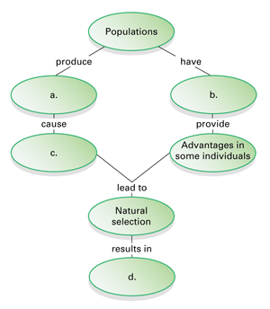
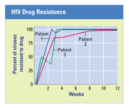
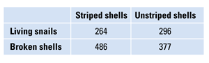

Reviewing Concepts
Multiple Choice
Choose the letter of the best answer.
1. Which of the following is an incorrect match?
a. Lyell—suggested physical changes to Earth result from geologic processes occurring over long periods of time.
b. Lamarck—proposed that organisms adapt to their environment.
c. Darwin—developed the theory of natural selection as a mechanism of change in species.
d. Malthus—thought that characteristics acquired during an organism's lifetime can be passed on to the next generation.
2. Which of the following provides clues about the size and structure of once-living organisms?
a. fossils
b. DNA and proteins from the organisms
c. vestigial structures
d. development of embryos
3. What statement is not an observation or inference on which Darwin's theory of natural selection is based?
a. Variations among individuals exist in a population.
b. Poorly adapted individuals never produce offspring.
c. Individuals whose inherited characteristics give them advantages in their environment will generally produce more offspring.
d. Species living today descended with modification from earlier species.
4. Artificial selection is similar to natural selection in that both processes
a. were suggested by Darwin.
b. adapt species to their environments.
c. occur over many millions of years.
d. depend on variation among individuals.
5. What genotype is the most beneficial for individuals living in regions where malaria is common?
a. homozygous dominant (no sickle cell alleles)
b. homozygous recessive (two sickle cell alleles)
c. heterozygous (one sickle cell allele)
d. no difference among the genotypes
Short Answer
6. How did Darwin's experiences during his voyage later affect his views about species?
7. How does descent with modification explain the diversity of life?
8. Explain how the formation of fossils provides a chronological record of past life forms.
9. How is evidence from DNA useful in understanding the evolution of species?
10. How are pesticide-resistant insects an example of natural selection?
11. Describe what can happen to a gene pool as a result of the bottleneck effect.
12. What is microevolution?
13. How does natural selection lead to adaptation?
Visualizing Concepts
14. Copy the concept map below and complete it.

Applying Concepts
Analyzing Information
15. Analyzing Graphs The following graph shows drug resistance that develops over time in the virus that causes AIDS. Use the graph to answer the questions below.

a. What trend appears in all the patients by the end of the third week?
b. Explain what happened to the virus population over the ten weeks of exposure to the drug.
c. How do these data reflect a problem in treating patients with the virus?
16. Analyzing Data A population containing striped and unstriped snails has recently moved into a new region. Birds break the snails open by dropping them onto rocks. The birds eat the bodies of the snails and leave the shells. In one area, researchers counted both live snails and broken shells. The data are summarized below.

a. Based on the data, tell which form of snail (striped or unstriped) is more likely to be caught by the birds for food. Explain.
b. Suggest a hypothesis to explain what is happening to the snails.
c. Predict how the frequencies of striped and unstriped individuals in the population might change over the generations.
Critical Thinking
17. Comparing and Contrasting Describe how the ideas of Lamarck and Darwin are similar and how they differ.
18. Analyzing Scientific Explanations How do Lyell's ideas about geology and evidence from the fossil record reinforce each other as ideas about the age of Earth?
19. Analyzing Scientific Explanations Tell how the forelimbs of a bat, a whale, a cat, and a human contribute evidence to support the hypothesis that these mammals evolved from a common ancestor.
20. Relating Cause and Effect Explain how the effectiveness of an antibiotic decreases with time.
21. Evaluating the Impact of Research Explain the significance of the Grants' research.
22. What's Wrong With These Statements?
Briefly explain why each statement is inaccurate or misleading.
a. Individuals adapt to their environment and pass the adaptations on to their offspring.
b. Homologous structures have the same function in unrelated species.
c. Pesticides have created pesticide-resistant insects.
Performance Assessment
Writing Some people say that living in a technological society makes humans unlikely to be affected by natural selection. Decide whether you agree with this statement, and write a short essay defending your position. Give examples to support your argument.